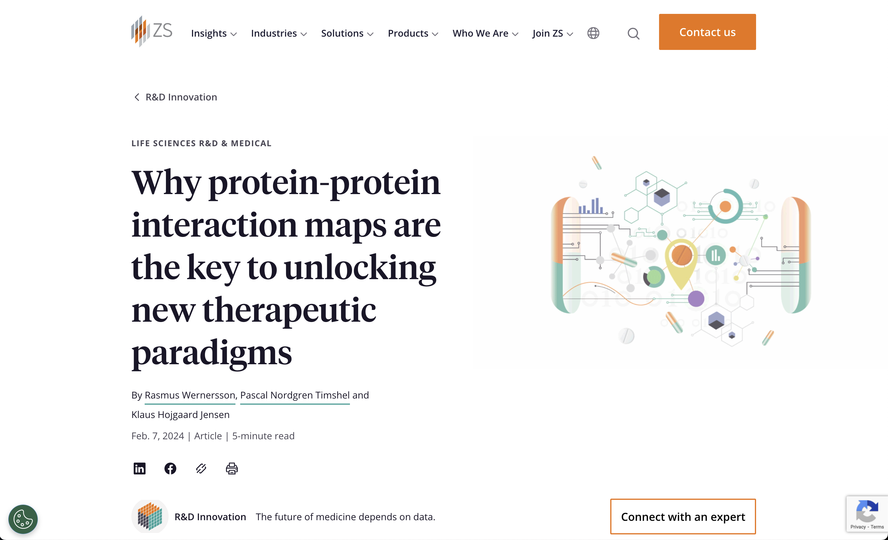
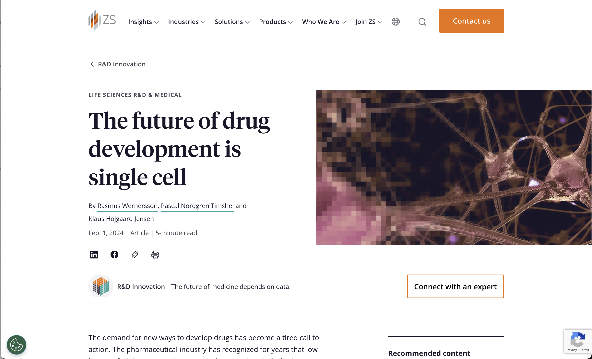

Cytoscape: A Tool for the Visualization, Analysis, and Integration of Biological Data
John "Scooter" Morris
ZS Associates
Feb 16 2024
Introductions
John "Scooter" Morris, UCSF
- Executive director, Resource for Biocomputing, Visualization, and Informatics
- Roving Engineer, National Resource for Network Biology
- Cytoscape team since 2006
- Author of over a dozen Cytoscape apps
Introduction
- What to talk about??
- What does the web site say??


PPI and Single Cell Analysis
John "Scooter" Morris
ZS Associates
Feb 16 2024